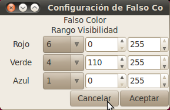

Carga, corrección, conversión y ajuste de rango dinámico de las imágenes.
Otros aspectos de la aplicación
Gabriel Alvarez
Se modelo el programa con POO ya que es de la forma en que mas naturalmente se resolvía el problema.
La funcionalidad de base para trabajar con la imagen satelital se abstrajo en un paquete de utilidad para facilitar su reuso en la construcción de otras aplicaciones o el cambio de bibliotecas de la interfaz de usuario.
Esta programado en c/c++ y la parte de utilidad de base utiliza gobject, la interfaz del usuario gtkmm (binding para c++ de GTK+)
Carga, corrección, conversión y ajuste de rango dinámico de las imágenes.
Vista de la ventana de elegir bandas y correcciones
Para hacer velozmente las correcciones y el ajuste de rango dinámico de la imagen se convierten las múltiples y complejas ecuaciones en una multiplicación y una suma para cada pixel de cada banda aprovechando que el numero digital (ND) es operado linealmente en todos los casos.
Con un ejemplo se va a entender mas claro, veamos el caso de reflactancia:
En cada banda el máximo y mínimo ND será 255 y 0 respectivamente, éstos multiplicados por el gain y sumando el bias darán un máximo y mínimo para la banda, haciendo este proceso para todas las bandas que se quieran ver se obtienen un máximo y mínimo de la imágen.[1]
Sabiendo que debo ajustar esos máximo y mínimo de la imagen a 255 y 0; con la ecuación de la recta que pasa por dos puntos podemos calcular valores de pendiente y ordenada al origen, para ajustar el valor corregido de cualquier banda a los valores apropiados para representar.
Por cada banda también puedo calcular una pendiente y ordenada al origen para encontrar la recta que mapéa desde el ND 0 al 255 con los valores mínimo y máximo de esa banda y así aplicar las correcciones de una forma mucho mas performante.
Y entonces, combinando esas dos rectas obtengo una tercera, con la que, con su pendiente y ordenada al origen convertiré los valores de los ND a los valores que debo pintar en la pantalla en un solo paso.
Imagen mostrando las bandas 4 6 2
(banda 4 verde banda 6 rojo bajda 2 azul)
Al aplicar la corrección del efecto rayleigh en la banda 6, como para esta no tiene sentido el concepto de Irradiancia solar al tope de la atmósfera, se estableció un valor arbitrario de 100 para procesarla junto con las demás bandas

Vista de la ventana de configuración de Falso
Color con selección de rangos visibles
En la pantalla de configuración de falso color se agrego por cada canal de color la posibilidad de establecer valores mínimo y máximo para determinar si un pixel se pinta o no de ese color acorde a su valor. Esto puede ser utilizado para resaltar diferentes tipos de cubiertas en la imágen.
Imagen con filtrado por rangos mostrando el verde solo para valores mayores que 90 y abajo misma imagen sin filtrar
Para la detección de bordes se utiliza un operador similar al sobel, la diferencia con éste es que al producto de las matrices no lo eleva al cuadrado para sumarlo y obtener la raíz cuadrada, sino que suma los valores absolutos de multiplicar las matrices y lo divide entre 6. Si el resultado es mayor que 10 pinta el pixel de blanco, sino no.
Esta molificación sobre el operador sobel es para que sea mas rápido el cálculo, ya que se calcula en tiempo real sobre la imagen mostrada y no es crítica la exactitud del resultado.
Vista de una imagen en la que se muestran
solamente los bordes de las bandas cargadas
Se itera en todos los pixeles mostrado y se pinta el pixel si el valor absoluto de la suma de los pixeles que lo rodean, ponderados tal como se muestra en esta tabla (matriz H)
1 | 2 | 1 |
0 | 0 | 0 |
-1 | -2 | -1 |
sumando al valor absoluto de la suma de los pixeles que rodean al punto ponderados con esta otra tabla (matriz V)
-1 | 0 | 1 |
-2 | 0 | 2 |
-1 | 0 | 1 |
dividido entre 6 es mayor que 10.
para cada pixel mostrado{
pintaPixel=falso
para cada banda cargada{
valor = valor absoluto de (multiplicar matriz H por los pixeles
que rodean al pixel)
+ valor absoluto de (multiplicar matriz V por los pixeles
que rodean al pixel)
/ 6
si valor > 10
pintaPixel = verdadero
}
si pintaPixel
pintar pixel de blanco
}
Imagen con detección de bordes activada
Zoom
Para hacer el zoom performante solo se multiplica por números enteros (en el zoom para alejar) o se divide por 2 (en el zoom para acercar)
Zoom para alejar Zoom para acercar
Se implemento funcionalidad para mostrar la firma espectral del pixel bajo el puntero, en la ventana que muestra el gráfico se muestra el valor en rango dinámico para ser representado en cada banda, y en la barra de estado se da información del valor calculado con la corrección elegida al cargar la imagen. Para mostrar este valor se vuelve “para atras” el valor ajustado al rango dinámico con una operación inversa a la explicada en el principio.
Firma espectral y barra de estado mostrando
los valores para el pixel bajo el puntero
Otros aspectos de la aplicación
Versión para windows de la aplicación mostrando la pantalla de elección de bandas y atrás la bitácora de la aplicación con información acerca de las correcciones hechas a las bandas.
Pantalla mostrando la cabecera de la imagen en crudo y algunos datos levantados de ésta.
[1]Si en vez de reflactancia quisiera ajustar para ver la imagen en radiancia o en radiancia con corrección del efecto rayleigh, también se deben obtener el máximo y mínimo corregido de cada banda y los de la imagen. A continuación se opera de la misma forma.